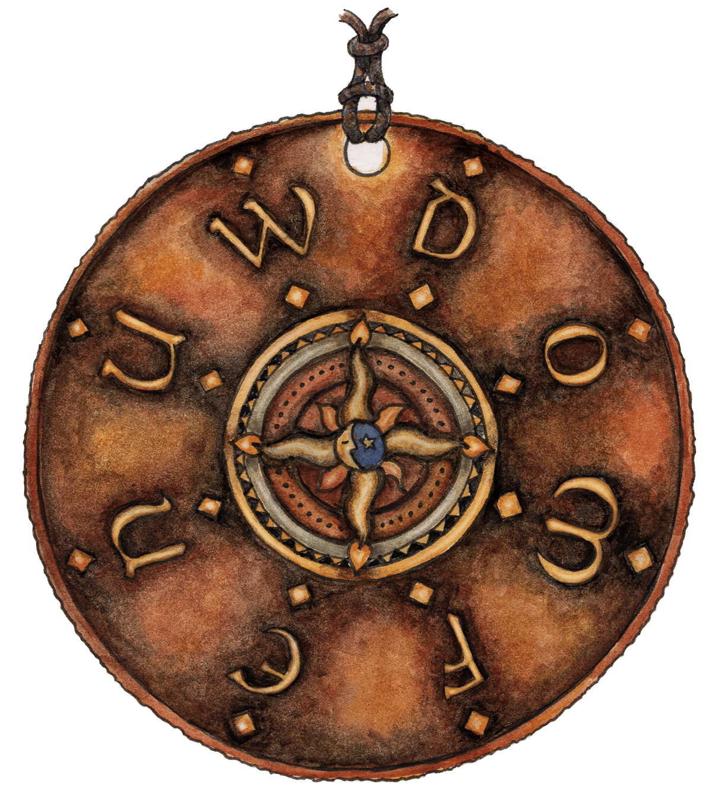

{% load assets fantasy %}

<div class="quest-meta">
<div class="flavor">
<p>To find the Component you're looking for, you'll have to travel to many wondrous realms!</p>
</div>



{% if round_info.puzzles|length > 0 %}
{% if team.is_public %}
<p class="notice">These glyphs were unlocked as you solved puzzles within <a href="{% url 'round_view' round_info.round.url %}">The Quest Coast</a>.</p>
{% endif %}
<div class="all-glyphs">
{% for feeder in round_info.puzzles|fantasy_feeders:team.is_public %}
<div class="glyph" id="{{ feeder.puzzle.url }}">
	<h3><a href="{% url 'puzzle_view' feeder.puzzle.url %}">{{ feeder.puzzle.name }}</a></h3>
	{% if team.is_public %}
	<div class="solution">Answer: <span class="fixed-width spoiler monospace">{{ feeder.puzzle.answer }}</span></div>
	{% else %}
	<div class="solution monospace">{{ feeder.puzzle.answer }}</div>
	{% endif %}
	<div class="message">This is the first step on a quest!</div>
	<iframe class="minipuzzle-iframe" src="{{ puzzle_info.full_path }}step?ref=quest{{ feeder.puzzle.external_id }}b&guess=1"></iframe>
	<iframe class="minipuzzle-iframe" src="{{ puzzle_info.full_path }}step?ref=quest{{ feeder.puzzle.external_id }}c&guess=1"></iframe>
	
</div>
{% endfor %}
</div>
{% endif %}
</div>
